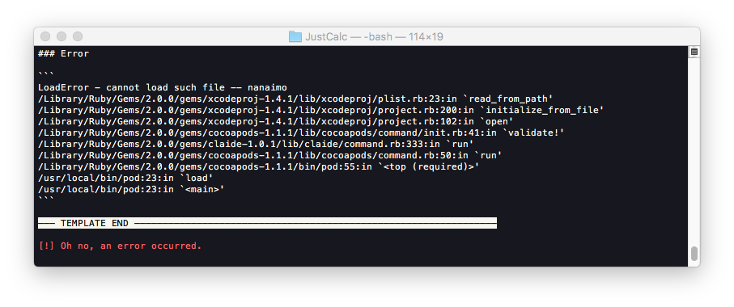

Create project with CocoaPods in swift 3
First step -> Get CocoaPods install on your Mac.
|
|
once CocoaPods successfully installed,
enter this command to complete the setup.
|
|
Let’s try to create a new project “JustCalc”,
after project created and saved.
get back into command line,
|
|

just try to uninstall old version of nanaimo
and then re-issue the pod init command
this will create a Podfile for your project.
you can use any PLAIN-TEXT editor to edit it.(e.g. ATOM)
here I recommended you to edit in Xcode.
|
|
add the pods you need.
in this case, I add 2 of them.
save the Podfile,
then install them with following command
as it said,
you now should close the original Xcode project
and move on with new file JustCalc.xcworkspace file.